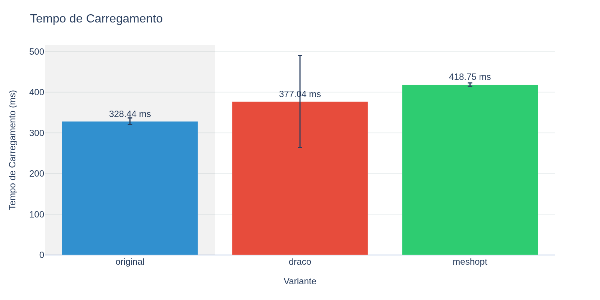
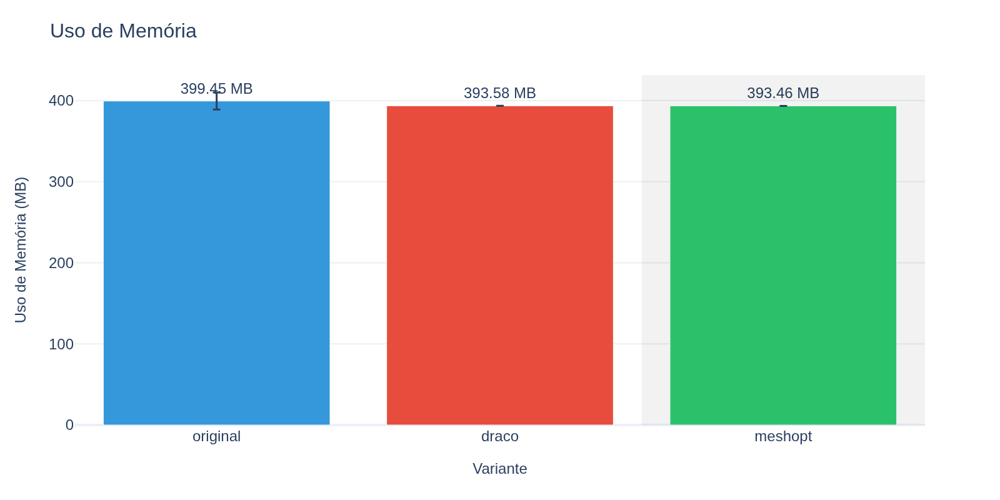
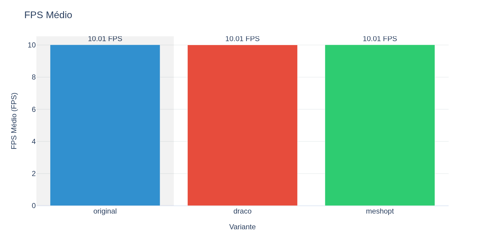
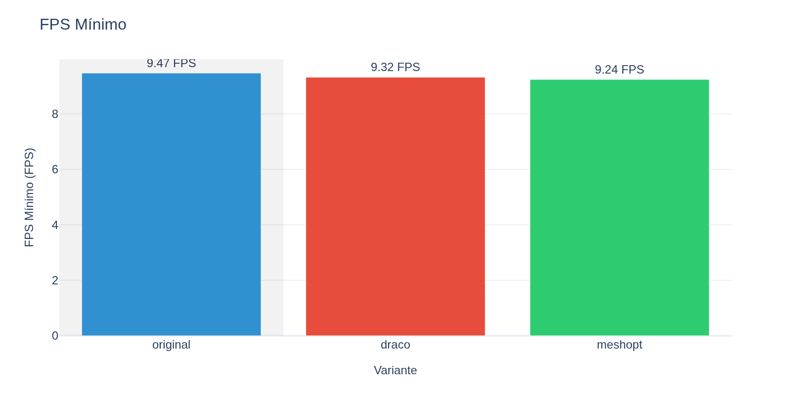
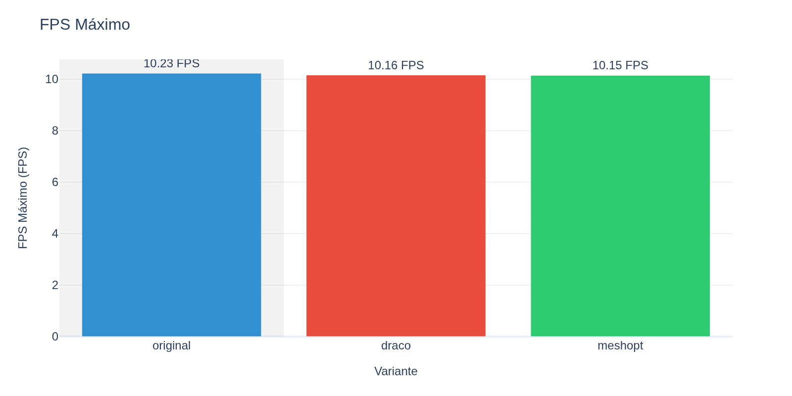
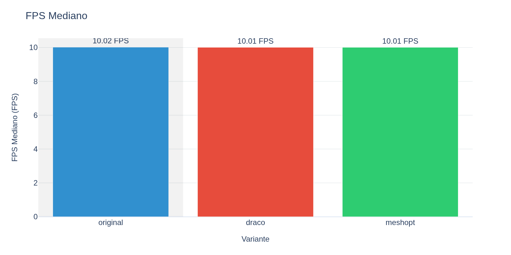
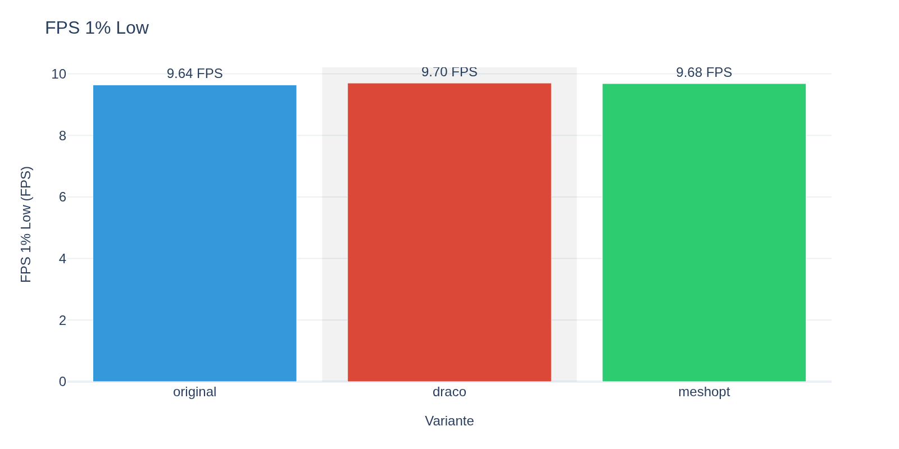
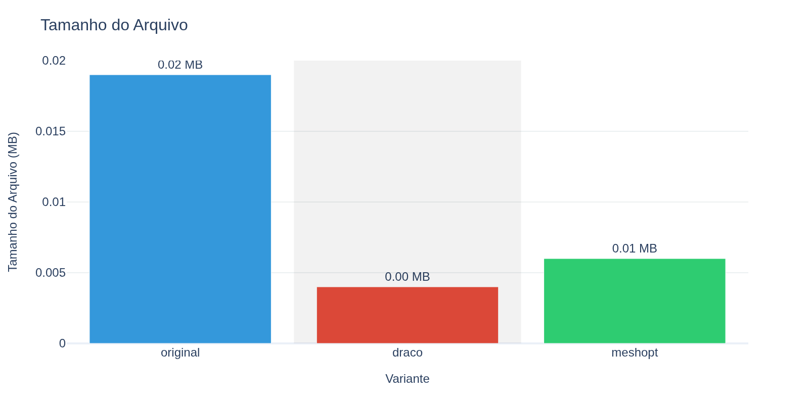

| Variante | Tamanho (MB) | FPS Médio | Load Time (ms) | Memória (MB) | Amostras |
|---|---|---|---|---|---|
| original | 0.019 | 10.0 | 328.4 | 399.4 | 3 |
| draco | 0.004 | 10.0 | 377.0 | 393.6 | 3 |
| meshopt | 0.006 | 10.0 | 418.8 | 393.5 | 3 |
| Comparação | Redução Tamanho | Mudança Load Time | Mudança FPS | Mudança Memória |
|---|---|---|---|---|
| draco | +78.9% | -14.8% | -0.1% | +1.5% |
| meshopt | +68.4% | -27.5% | +0.0% | +1.5% |
Tempo em milissegundos necessário para carregar e processar o modelo 3D na memória.
Por que é importante: Determina quanto tempo o usuário aguarda antes de poder visualizar o modelo. Tempos altos causam má experiência.
Valores ideais: < 500ms para modelos pequenos/médios, < 1000ms para modelos grandes

Fórmula: Média aritmética dos valores de load_ms de todas as amostras da variante
Fonte dos dados: Coluna load_ms no CSV
Modelos comprimidos (Draco/Meshopt) geralmente têm tempo de carregamento maior devido à descompressão. Compare o overhead adicional com o ganho de tamanho de arquivo.
| Timestamp | Valor |
|---|---|
| 2025-10-19 22:54:27-03:00 | 332.25 ms |
| 2025-10-19 22:54:33-03:00 | 318.85 ms |
| 2025-10-19 22:54:40-03:00 | 334.22 ms |
| Timestamp | Valor |
|---|---|
| 2025-10-19 22:55:04-03:00 | 507.46 ms |
| 2025-10-19 22:55:10-03:00 | 317.30 ms |
| 2025-10-19 22:55:16-03:00 | 306.36 ms |
| Timestamp | Valor |
|---|---|
| 2025-10-19 22:54:45-03:00 | 423.22 ms |
| 2025-10-19 22:54:52-03:00 | 417.97 ms |
| 2025-10-19 22:54:58-03:00 | 415.06 ms |
Quantidade de memória RAM consumida pelo modelo após carregamento completo.
Por que é importante: Memória é um recurso limitado, especialmente em dispositivos móveis. Alto consumo pode causar crashes ou impactar outras aplicações.
Valores ideais: Proporcional ao tamanho e complexidade do modelo. Modelos simples devem usar < 100MB.

Fórmula: Média aritmética dos valores de mem_mb de todas as amostras da variante
Fonte dos dados: Coluna mem_mb no CSV
Modelos comprimidos podem expandir na memória após descompressão. Verifique se o uso de memória permanece aceitável para seu caso de uso.
| Timestamp | Valor |
|---|---|
| 2025-10-19 22:54:27-03:00 | 411.63 MB |
| 2025-10-19 22:54:33-03:00 | 393.35 MB |
| 2025-10-19 22:54:40-03:00 | 393.37 MB |
| Timestamp | Valor |
|---|---|
| 2025-10-19 22:55:04-03:00 | 393.57 MB |
| 2025-10-19 22:55:10-03:00 | 393.56 MB |
| 2025-10-19 22:55:16-03:00 | 393.60 MB |
| Timestamp | Valor |
|---|---|
| 2025-10-19 22:54:45-03:00 | 393.45 MB |
| 2025-10-19 22:54:52-03:00 | 393.44 MB |
| 2025-10-19 22:54:58-03:00 | 393.48 MB |
Taxa média de quadros por segundo durante a renderização do modelo.
Por que é importante: Mede a performance geral de rendering. FPS baixo resulta em animações travadas e má experiência visual.
Valores ideais: ≥ 60 FPS (experiência suave), ≥ 30 FPS (aceitável), < 30 FPS (problemático)

Fórmula: Média aritmética dos valores de fps_avg de todas as amostras da variante
Fonte dos dados: Coluna fps_avg no CSV
Compare entre variantes para identificar impacto na performance. Diferenças menores que 5% são geralmente imperceptíveis.
| Timestamp | Valor |
|---|---|
| 2025-10-19 22:54:27-03:00 | 10.02 FPS |
| 2025-10-19 22:54:33-03:00 | 10.02 FPS |
| 2025-10-19 22:54:40-03:00 | 10.00 FPS |
| Timestamp | Valor |
|---|---|
| 2025-10-19 22:55:04-03:00 | 9.98 FPS |
| 2025-10-19 22:55:10-03:00 | 10.03 FPS |
| 2025-10-19 22:55:16-03:00 | 10.01 FPS |
| Timestamp | Valor |
|---|---|
| 2025-10-19 22:54:45-03:00 | 10.01 FPS |
| 2025-10-19 22:54:52-03:00 | 10.01 FPS |
| 2025-10-19 22:54:58-03:00 | 10.02 FPS |
Menor taxa de FPS registrada durante todos os testes.
Por que é importante: Identifica os piores momentos de performance (picos de lag). Importante para garantir experiência consistente.
Valores ideais: > 30 FPS (não cair abaixo desse valor)

Fórmula: Valor mínimo entre todos os fps_min das amostras da variante
Fonte dos dados: Coluna fps_min no CSV
FPS mínimo muito abaixo da média indica instabilidade. Investigate possíveis causas (carregamento, garbage collection, etc).
| Timestamp | Valor |
|---|---|
| 2025-10-19 22:54:27-03:00 | 9.83 FPS |
| 2025-10-19 22:54:33-03:00 | 9.62 FPS |
| 2025-10-19 22:54:40-03:00 | 9.47 FPS |
| Timestamp | Valor |
|---|---|
| 2025-10-19 22:55:04-03:00 | 9.32 FPS |
| 2025-10-19 22:55:10-03:00 | 9.90 FPS |
| 2025-10-19 22:55:16-03:00 | 9.88 FPS |
| Timestamp | Valor |
|---|---|
| 2025-10-19 22:54:45-03:00 | 9.91 FPS |
| 2025-10-19 22:54:52-03:00 | 9.24 FPS |
| 2025-10-19 22:54:58-03:00 | 9.90 FPS |
Maior taxa de FPS registrada durante todos os testes.
Por que é importante: Mostra o potencial máximo de performance em condições ideais.
Valores ideais: Quanto maior, melhor. Pode ser limitado por VSync ou refresh rate do monitor.

Fórmula: Valor máximo entre todos os fps_max das amostras da variante
Fonte dos dados: Coluna fps_max no CSV
FPS máximo similar entre variantes indica que a geometria não é o gargalo principal.
| Timestamp | Valor |
|---|---|
| 2025-10-19 22:54:27-03:00 | 10.20 FPS |
| 2025-10-19 22:54:33-03:00 | 10.23 FPS |
| 2025-10-19 22:54:40-03:00 | 10.17 FPS |
| Timestamp | Valor |
|---|---|
| 2025-10-19 22:55:04-03:00 | 10.16 FPS |
| 2025-10-19 22:55:10-03:00 | 10.14 FPS |
| 2025-10-19 22:55:16-03:00 | 10.13 FPS |
| Timestamp | Valor |
|---|---|
| 2025-10-19 22:54:45-03:00 | 10.11 FPS |
| 2025-10-19 22:54:52-03:00 | 10.14 FPS |
| 2025-10-19 22:54:58-03:00 | 10.15 FPS |
Valor central da distribuição de FPS (50º percentil).
Por que é importante: Mais resistente a valores extremos (outliers) do que a média. Representa melhor a experiência típica.
Valores ideais: Próximo ao FPS médio indica distribuição estável

Fórmula: Mediana dos valores de fps_median de todas as amostras da variante
Fonte dos dados: Coluna fps_median no CSV
Se fps_median for significativamente diferente de fps_avg, há outliers impactando a média.
| Timestamp | Valor |
|---|---|
| 2025-10-19 22:54:27-03:00 | 10.02 FPS |
| 2025-10-19 22:54:33-03:00 | 10.03 FPS |
| 2025-10-19 22:54:40-03:00 | 10.01 FPS |
| Timestamp | Valor |
|---|---|
| 2025-10-19 22:55:04-03:00 | 10.00 FPS |
| 2025-10-19 22:55:10-03:00 | 10.02 FPS |
| 2025-10-19 22:55:16-03:00 | 10.01 FPS |
| Timestamp | Valor |
|---|---|
| 2025-10-19 22:54:45-03:00 | 10.02 FPS |
| 2025-10-19 22:54:52-03:00 | 10.01 FPS |
| 2025-10-19 22:54:58-03:00 | 10.01 FPS |
FPS do 1º percentil inferior - representa o pior 1% dos frames capturados.
Por que é importante: Métrica crítica para detectar stuttering e travamentos momentâneos que arruínam a experiência do usuário.
Valores ideais: > 50% do FPS médio indica boa consistência

Fórmula: Média dos valores de fps_1pc_low de todas as amostras da variante
Fonte dos dados: Coluna fps_1pc_low no CSV
FPS 1% Low muito abaixo da média indica problemas de frame pacing ou stuttering. Isso impacta mais a experiência que um FPS médio alto.
Tamanho do arquivo do modelo em megabytes no disco.
Por que é importante: Impacta tempo de download, uso de banda, armazenamento e tempo de carregamento inicial.
Valores ideais: Quanto menor, melhor - mas sem perder qualidade visual necessária

Fórmula: Média dos valores de file_mb de todas as amostras da variante
Fonte dos dados: Coluna file_mb no CSV
Calcule a taxa de compressão em relação ao original. Avalie se o ganho de tamanho justifica possíveis perdas de performance.
| Timestamp | Valor |
|---|---|
| 2025-10-19 22:54:27-03:00 | 0.02 MB |
| 2025-10-19 22:54:33-03:00 | 0.02 MB |
| 2025-10-19 22:54:40-03:00 | 0.02 MB |
| Timestamp | Valor |
|---|---|
| 2025-10-19 22:55:04-03:00 | 0.00 MB |
| 2025-10-19 22:55:10-03:00 | 0.00 MB |
| 2025-10-19 22:55:16-03:00 | 0.00 MB |
| Timestamp | Valor |
|---|---|
| 2025-10-19 22:54:45-03:00 | 0.01 MB |
| 2025-10-19 22:54:52-03:00 | 0.01 MB |
| 2025-10-19 22:54:58-03:00 | 0.01 MB |
Os benchmarks foram realizados usando o sistema de métricas do PolyDiet, que:
Ambiente:
Relatório gerado automaticamente pelo PolyDiet Report Generator